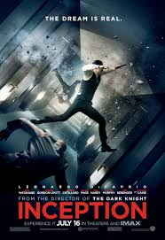

.png )
Se7en (1995)
Dirigida por David Fincher, es un thriller psicológico sombrío y perturbador que explora los temas del crimen, la moralidad y la obsesión. La trama sigue a dos detectives, interpretados por Brad Pitt y Morgan Freeman, mientras
investigan una serie de asesinatos inspirados en los siete pecados capitales. La atmósfera opresiva, las actuaciones intensas y el giro final impactante hacen de esta película una de las más inquietantes y memorables del cine contemporáneo.
La dirección de Fincher y el guion de Andrew Kevin Walker logran mantener la tensión hasta el último minuto, con una resolución inquietante que deja una profunda reflexión. Es una obra maestra de suspenso psicológico que no deja indiferente.
PUNTAJE: 9/10

Inception (2010)
Inception, dirigida por Christopher Nolan, es una fascinante mezcla de ciencia ficción, acción y thriller psicológico. La trama sigue a Dom Cobb (Leonardo DiCaprio), un ladrón de secretos que puede infiltrarse en los sueños de las personas, en una misión que le ofrecerá la posibilidad de redimir su pasado. La película se destaca por su complejidad narrativa, con capas de sueños dentro de sueños que desafían la percepción del tiempo y la realidad. Las escenas de acción son espectaculares, especialmente las de gravedad cero, y la dirección de Nolan logra mantener el suspenso de principio a fin. Sin embargo, la densidad de la trama puede resultar confusa para algunos y, en ciertos momentos, la película se siente un tanto larga. A pesar de ello, Inception es una obra visualmente impresionante que deja una huella profunda, con un final abierto que invita a la reflexión.
PUNTAJE: 9.5/10

.png)